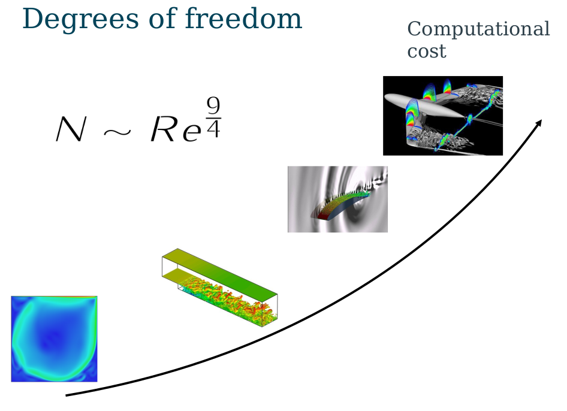
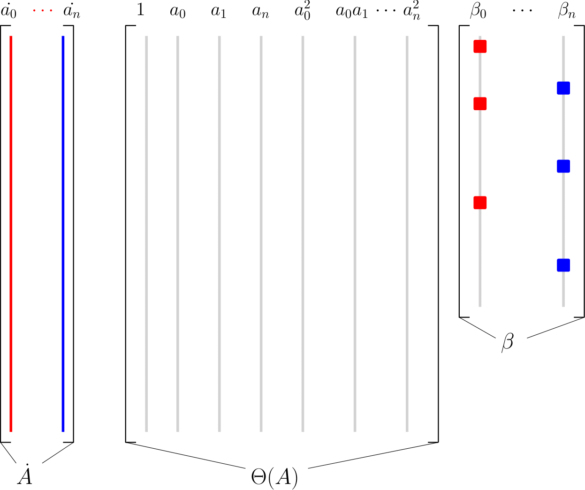
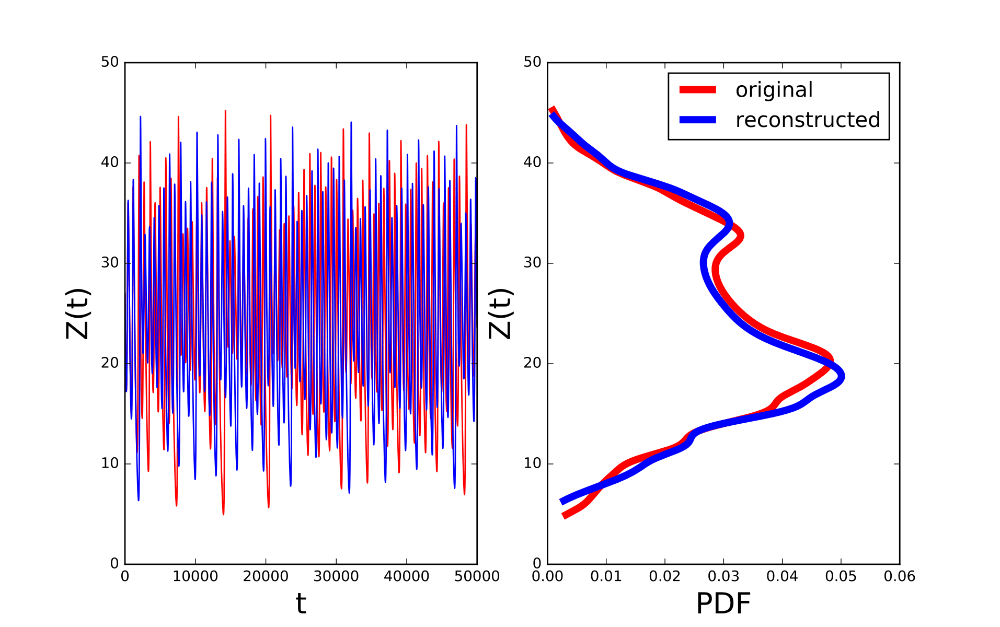
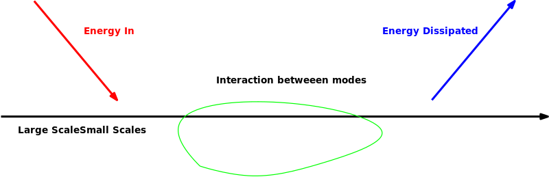

The main purpose of this page is to give a first glimpse on the thematic I am tackling in my PhD project... This is still an ongoing research so the page is not complete. New contents will be uploaded soon! Stay tuned!
Motivation
The amount of information needed to describe a turbulent flow becomes quickly unmanageable as the Reynolds number increases
Main Idea
Reduced Order Models
Decompose the flow field in the modes (shapes) that contain the most of the energy and describe the evolution of only those modes
$$\color{black}{u(x,t) = U(x) + \sum_{i}^N {\phi(x) a(t)}}$$A nice example is given by the decomposition of the unsteady flow field around a circular body.
The unsteady flow field can be decomposed in a steady part (upper left) and then in a series of spatial modes ranked according to their energy content. Figure upper right and bottom left and right represent the spatial shapes, the energy content and the temporal evolution of three POD modes.
The main arising problem is that due to the non linear nature of the governing equations every mode interacts with all the others in a non trivial way.
We would like to leverage the capabilities of the machine learning to neglect the non necessary interactions.
Under the hood of Machine Learning
In a nutshell machine learning is the field of computer science that "uses statistical techniques that give the machine the ability to "learn" from data without being explicitly programmed"
LASSO Regression
The main idea is to create a procedure capable to select only the most important feature that contribute in the description of a certain model. This is achieved adding to a standard least square formulation a penalisation term in the form of a $\color{black}{l1}$ norm:
$$\color{black}{\tilde{\beta} = \min_{\beta}{||\beta \Theta(a) - \dot{A} ||_2^2 + \lambda ||\beta||_1 }}$$This allows us to generate a whole family of models varying the value of the parameter $\color{black}{\lambda}$.
An interesting exercise is apply this procedure to the Lorenz system
The system can be recast in the following way more suitable to perform regression:
$$\color{black}{\dot{A} = \Theta(a) \beta}$$In particular: $\color{black}{\dot{A}}$ is a matrix of which every column contains the temporal story of the local acceleration $\color{black}{[\dot{X}, \dot{Y}, \dot{Z}]}$ in this case.
$\color{black}{\Theta(a)}$ contains the temporal story of the linear and non linear interactions of the system, in this case $\color{black}{[1,X,Y,Z,X^2,XY,XZ,Y^2,YZ,Z^2]}$
The entries of $\color{black}{\beta}$ are the degrees of freedom of the optimisation procedure, the non zero coefficients of this matrix select the interactions that contribute the most to the dynamic of a certain mode
It is interesting to observe how increasing the value of the regularisation parameter $\color{black}{\lambda}$ the algorithm is able to extract only the terms of the matrix $\color{black}{\beta}$ that contribute effectively to the dynamics of the system. Moving from left to right in the left graph we can observe that the reconstruction error ( defined as $\color{black}{\frac{1}{T} \int_{T} \int_{V} ||\dot{X}_{rec} - \dot{X}_{ori}||_2^2 dxdydzdt}$ where rec is the reconstructed solution and ori the original one) doesn't change much as a lot of unnecessary term are erased from the system. An optimum number of terms, in this case, exist and it is located at the knee point of the red curve.
The procedure must conserve the statistical properties of the original system such as probability distribution of the trajectories. An example is showed in the following figure where the trajectory of the $\color{black}{Z}$ coordinate $\color{black}{z(t)}$ for both the original system and the reconstructed one is reported.
Toy problem
The whole procedure from the creation of the dataset to the feature selection is computational expensive. For this reason we chose to test the algorithm on a mono dimensional test case
Kuramoto-Sivashinsky model: 1D Turbulence
Simple one dimensional model that include a scales interaction similar to the one of a turbulent flow: the energy is injected in the biggest scales of the flow, the nonlinear interaction between modes transfer the energy from the biggest scales to the smallest ones and finally the viscosity dissipate it in the smaller scales of the flow
$$\color{black}{u_t + uu_x + u_{xx} + u_{xxxx} = 0}$$ The second interesting feature of this model is that the separation between the largest scales and the smallest scales increases proportionally to the length of the computational domain
Due to the simple geometry is possible to decompose the flow in Fourier modes (right figure)
$$\color{black}{\dot{u_k} = (k^2 - k^4) u_{k} - \frac{i}{2}k \sum_{p+q = k} {u_p u_q}}$$Then we can study the interaction between the different length scales. Moreover the already sparse structure of the Fourier representation of the flow allows to visualise all the possible non linear interactions on a simple 2D plane (left figure) where every point represent the interaction between two different wave lengths $\color{black}{u_p u_q}$.

The procedure showed on the Lorenz's system can now be applied on the Kuraoto-Sivashinsky system in order to extract the sparsity pattern of the system
Then it is possible to run again the simulations choosing models with different density ratio and monitor the statistical proprieties of the system.
In the following graph is reported the kinetic energy of the flow $\color{black}{E(t) = \int_V U(x,t)^2 dx}$ for two different models

The black line is the original simulation while the blue line represents a reconstructed model. Of course the two simulations are not overlapping due to the chaotic nature of the system. However the average and statistical properties of the system are caught pretty well by the procedure.
The purpose of this page is only to give a first glimpse on the project. If you are interested in more technical details you can refer to this report or shoot me a mail to riru93@gmail.com
Further developments:
2D Lid Driven Cavity Flow
The previous analysis has been performed in the framework of the Fourier analysis. This allow a very elegant way to describe the scale interaction however has as major drawback that the geometry must be periodic this avoid to describe flows in fairly complex geometries. The next step will be to extend this procedure to the framework of POD based reduced order models.
The first test case taken into analysis will be the 2D lid driven cavity flow.